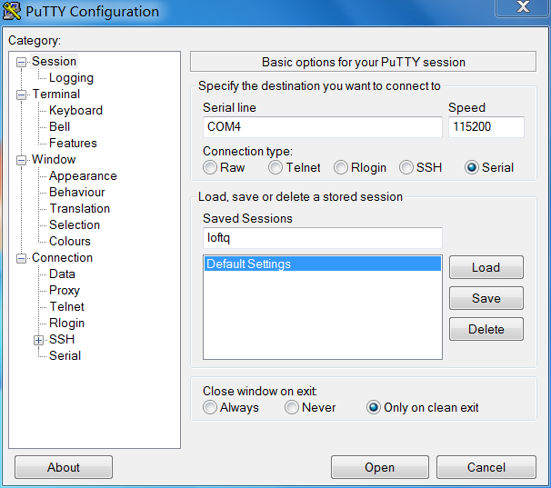
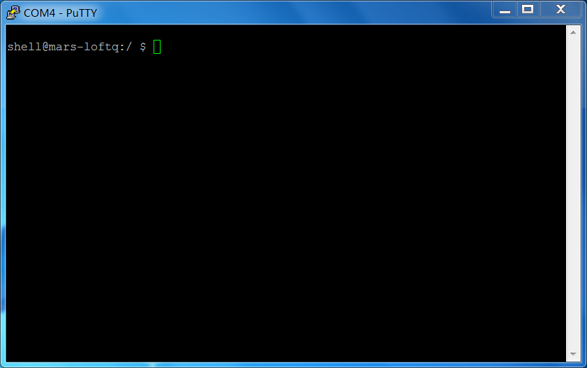
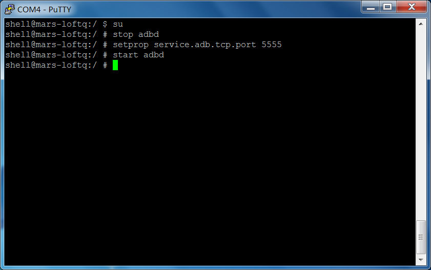
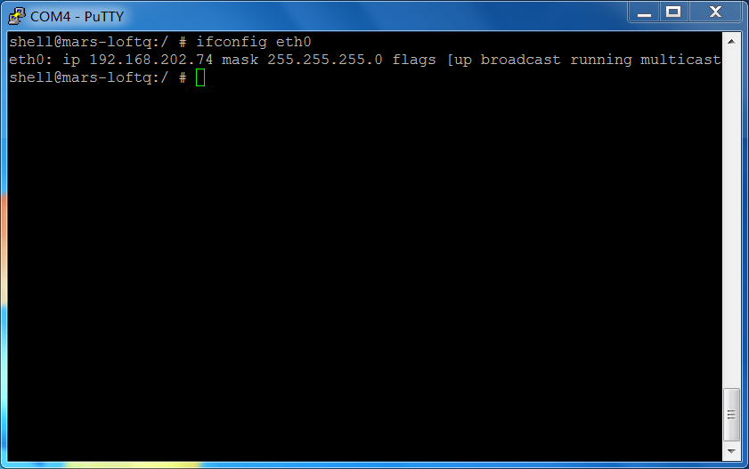
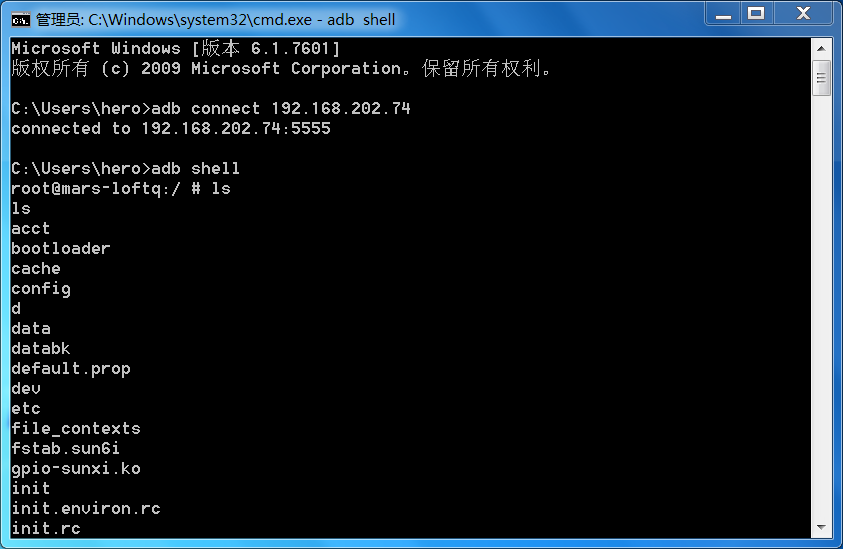

Android adb 网络调试¶
本节主要介绍通过网络对 Android 进行 ADB 调试。目前 LOFT-Q 没有用于 ADB 调试的 OTG USB 接口, 只能通过网络进行 ADB 调试。
前期准备¶
- LOFT-Q 原型板上电
- 连接 LOFT-Q 以太网或者通过设置连接可用的 Wifi 网络
GNU/Linux 系统准备¶
调试工具安装¶
本节基于 Ubuntu 操作过程编写, 对于其他操作系统, 可以查找相关的方法来进行工具的安装。对于调试用到的工具是 minicom 和 adb。相关的安装命令如下：
Minicom 是串口工具, 在 Linux 下可以选择其他的一些串口工具, 如 kermit, xgon, Cutecom 等。这里仅以 Minicom 为例。安装方法如下：
sudo apt-get install minicom
adb 工具，依次执行如下命令进行安装：
sudo add-apt-repository ppa:phablet-team/tools && sudo apt-get update sudo apt-get install android-tools-adb android-tools-fastboot
启用网络 ADB (Ubuntu)¶
在上述工具软件安装完成后, 需要启用 Android 的网络 ADB 协议。具体步骤如下：
连接 LOFT-Q 串口线, 可以使用 USB 转串口线连接。
如果使用 USB 转串口连接, 使用 Minicom 打开串口，指令如下：
sudo minicom -D /dev/ttyUSB0
Tip
备注： 上述 ttyUSB0 为USB转串口在 Ubuntu 中对应的名称, 根据系统的不同, 可能会有所变化。
调试串口, 启用 root 权限。在使用 minicom 连接成功后，按下回车，然后输入如下内容：
su
启用 ADB 网络协议。依次在交互命令行中输入如下指令：
stop adbd setprop service.adb.tcp.port 5555 start adbd
查看当前 LOFT-Q 的网络 IP 地址。
以太网 IP 地址查看方法：
ifconfig eth0
无线网络 IP 地址查看方法：
ifconfig wlan0
Windows 系统准备¶
对于 Windows 系统，在开始调试之前需要安装和准备如下程序：
- JDK
- Android SDK
- putty 或者其他串口程序
启用网络 ADB (windows)¶
在上述工具软件安装完成后, 需要启用 Android 的网络 ADB 协议。具体步骤如下：
连接 LOFT-Q 串口线, 可以使用 USB 转串口线连接。
在连接完成后, 使用 putty 打开串口，配置方式如下图：
Tip
备注： 上图配种中需要根据自己的串口进行设置，这里选择 COM4 ，波特率设置为 115200，同时选择连接方式为 Serial。
配置完成之后，选择 Open 打开串口，然后在窗口中按下 Enter 回车键，将会显示 Android shell 如下图：
启用 ADB 网络协议。依次在交互命令行中输入如下指令：
su stop adbd setprop service.adb.tcp.port 5555 start adbd
具体的操作如下图：
查看当前 LOFT-Q 的网络 IP 地址。
以太网 IP 地址查看方法：
ifconfig eth0
无线网络 IP 地址查看方法：
ifconfig wlan0
显示结果如图：

{kind=link}
{kind=link}
{kind=link}
{kind=link}
连接网络 ADB¶
在启用网络 ADB 完成之后, 需要在主机端尝试连接网络 ADB 进行调试。
ADB 连接 LOFT-Q
adb connect 192.168.1.100
Tip
备注： 上述指令中的 192.168.1.100 为 LOFT-Q 在网络中的 IP 地址。
ADB shell 打开
adb shell
对于 windows 平台，需要将 android-sdk 相关工具加入到 环境变量 ，同是在 cmd 中输入上述指令，如下图：
{kind=link}
Eclipse 调试¶
在 adb 连接之后, 可以使用 eclipse 进行调试, 在进行 Android 应用调试时, 将会直接在 LOFT-Q 中安装并打开相应的调试程序进行调试。
注意事项¶
- 对于 ADB 网络连接, 在 LOFT-Q 重启之后将会失效, 需要参照 启用网络 ADB 中的过程重新进行启用。
- eclipse 进行联机调试时, 受限于当前网络环境, 可能会出现连接超时的情况, 只需要重新发起调试即可。